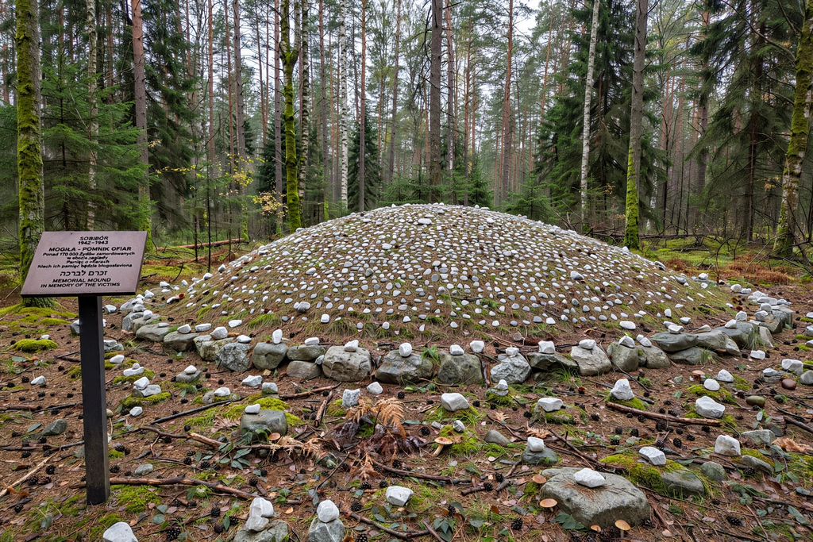

Sobibór extermination camp
| Sobibór extermination camp | |
|---|---|
 | |
| Location | Near Sobibór, occupied Poland |
| Operated | May 1942 – October 1943 |
| Commandants | Franz Stangl; Franz Reichleitner |
| Victims | Estimated 170,000–250,000 Jews |
Sobibór was a Nazi German extermination camp in the forest near the village of Sobibór in occupied eastern Poland. Built as part of Operation Reinhard alongside Bełżec and Treblinka, it operated from May 1942 until October 1943. Between 170,000 and 250,000 Jews from Poland, the Netherlands, France, Germany, and elsewhere were murdered there, nearly all in gas chambers using engine exhaust.
Operation
The camp was divided into a reception area, an administration section, and a secluded killing area ("Camp III") connected to the arrival ramp by a narrow fenced path. Deportees were told they were at a transit camp, forced to undress, and driven into gas chambers disguised as showers. Jewish Sonderkommando prisoners were forced to sort victims' belongings, cut women's hair, and dispose of bodies, which were later exhumed and cremated as the Nazis sought to erase evidence.
The uprising
On October 14, 1943, the camp's underground — led by Polish-Jewish officer Leon Feldhendler and Soviet prisoner of war Alexander Pechersky — staged one of the most successful revolts of the Holocaust. Prisoners secretly killed eleven SS men and several guards, then stormed the fences under fire; about 300 of the 600 prisoners escaped into the forest, and roughly 58 are known to have survived the war. In response, Himmler ordered Sobibór closed and demolished, the grounds ploughed and planted with trees, and the remaining prisoners murdered.
Aftermath and memory
Several perpetrators were tried decades later, including guards convicted at the Sobibór trial at Hagen in 1966 and, in 2011, John Demjanjuk, convicted in Munich as an accessory for his service as a guard at the camp. Archaeological work since 2007 has uncovered the foundations of the gas chambers and personal effects of victims. A new museum and memorial on the site was completed in the 2020s, and the revolt is commemorated annually in October and around International Holocaust Remembrance Day.